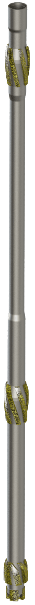

Milling system

The milling system is designed to provide efficient and controlled performance throughout the window milling operation. The system includes dedicated mill configurations selected according to the required whipstock inclination, casing size, formation conditions and sidetracking objectives. The mills are equipped with tungsten carbide cutting elements strategically distributed across the working surfaces to provide an optimized cutting structure, uniform load distribution and stable cutting performance.
- Casing string
- 5 1/2″ – 13 3/8″
- Sizes
- 56
- Category
- Sidetracking
Design advantages
- Dedicated milling configurations for different whipstock inclination angles
- Optimized mill arrangement for controlled window creation
- Tungsten carbide cutting structure for effective casing and formation cutting
- Uniform distribution of cutting load across the working surfaces
- Smooth and continuous milling progression
- Additional mill bit for completion of the casing cut when required
- Adaptability to varying formation and downhole conditions
- Reduced risk of incomplete casing penetration
- Efficient preparation of the window for subsequent sidetracking operations
About the tool
The milling assembly is configured according to the selected whipstock inclination. A three-mill configuration is used for 2° inclination, while a two-mill configuration is used for 2.5° and 3° inclinations and configurations for casing sizes from 5 1/2 in. to 13 3/8 in., with various casing wall thicknesses. The selected arrangement provides controlled engagement with the casing and formation and supports a smooth milling sequence throughout window creation.
The window mill is a universal milling tool that can be used with different whipstock configurations. When used with a hydraulic kit, the same window mill can be adapted for operation with a hydraulic whipstock, providing flexibility across mechanical and hydraulic whipstock configurations.
A mill bit is available as an additional milling tool for applications where the primary mill does not fully penetrate the casing due to specific formation or downhole conditions. The mill bit can be run to complete the remaining casing cut and ensure the required window is fully opened before proceeding with the subsequent sidetracking operation.
Sizes
Part of solutions


Can be combined with


Show all (6)Show fewer


Request Milling system
Tell us the casing, the depth and the conditions, and we will come back with a selection.
Contact us